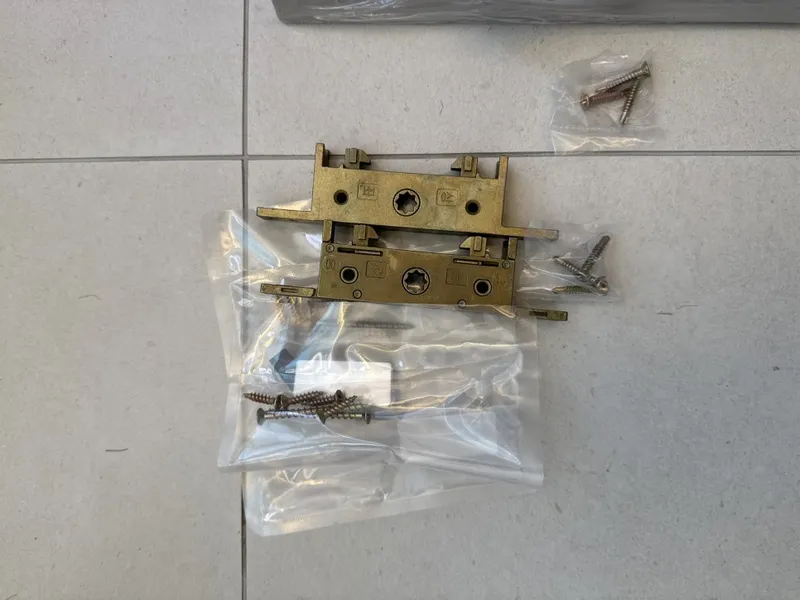
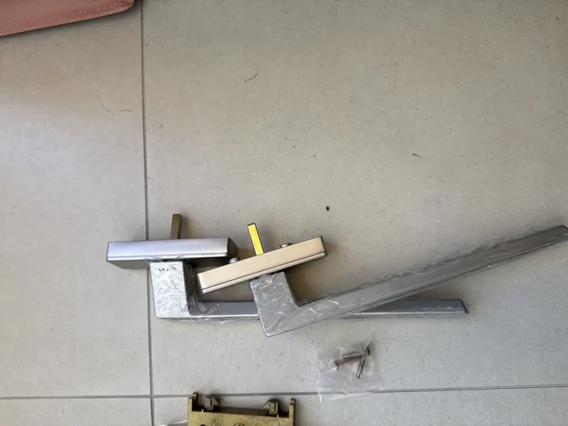
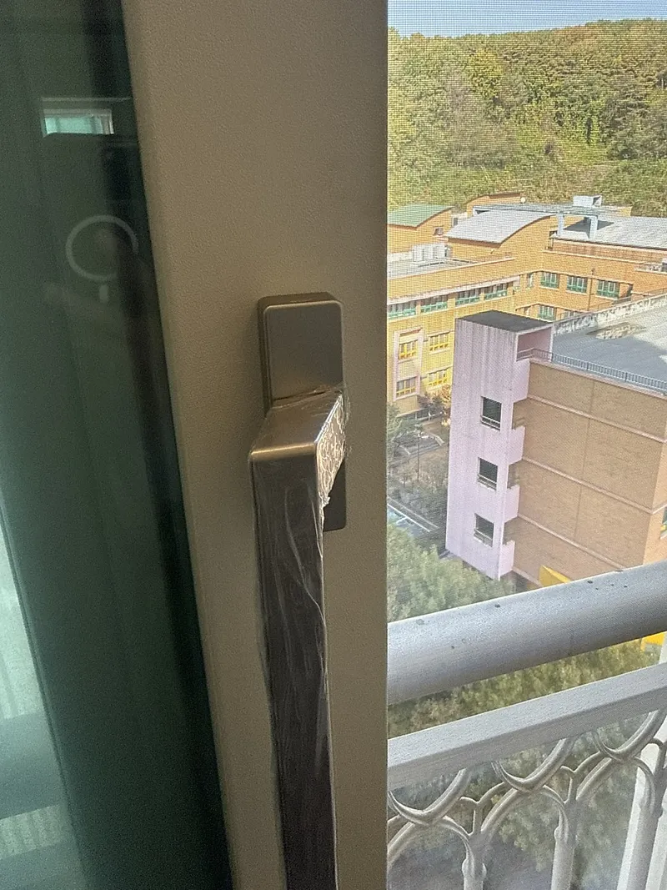
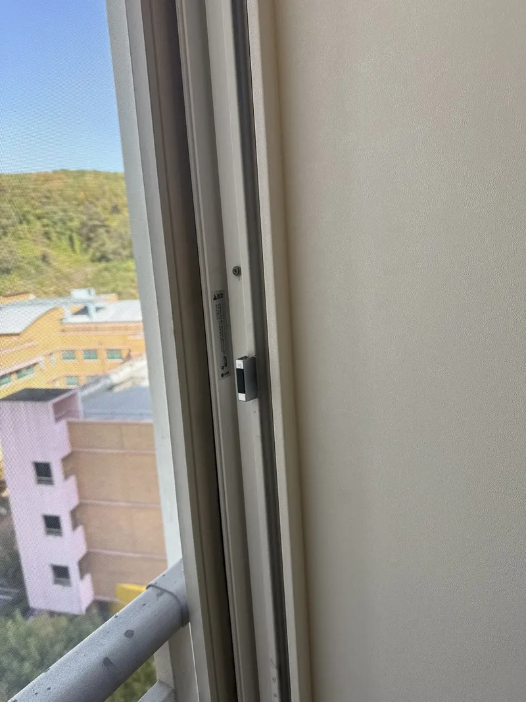
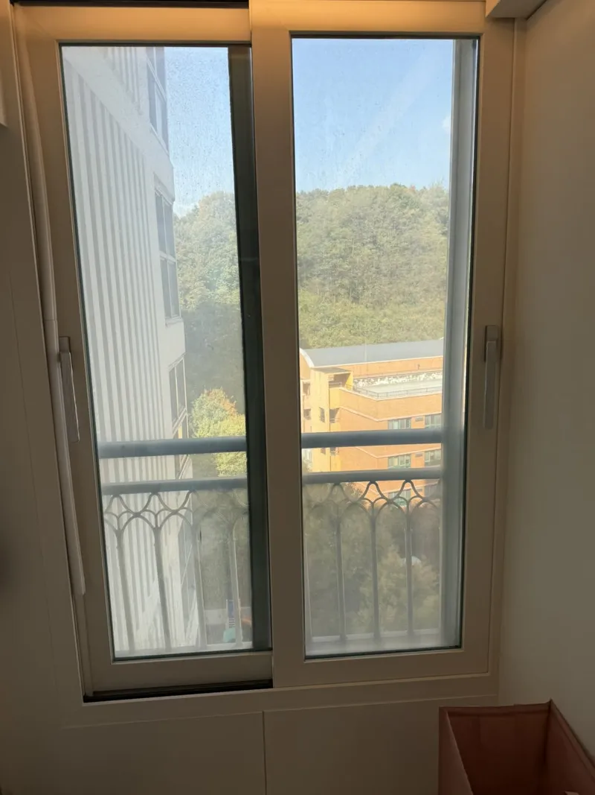

용인 강남마을자연앤 LX샷시 손잡이 교체, 잠금 부속까지 한 세트로 전체 교체
용인 강남마을자연앤 아파트 창문의 손잡이를 LX Z:IN 제품으로 전체 교체한 현장입니다. 손잡이만이 아니라 안쪽 잠금 부속까지 맞춰 바꿨습니다.
010-7360-1917손잡이를 떼어 내면 잠금 부속 자리가 드러납니다
샷시 손잡이는 창짝 안쪽의 잠금 부속과 연결되어 있고, 손잡이를 돌리면 그 부속이 움직여 창이 잠깁니다. 손잡이를 떼어 내면 부속이 들어가는 자리와 고정 구멍이 그대로 보입니다. 새 손잡이만 달고 낡은 부속을 그대로 두면 헛돌거나 덜 잠기는 증상이 다시 생길 수 있어서, 손잡이와 부속을 함께 보고 범위를 정합니다.
새 손잡이와 잠금 부속을 한 세트로 준비했습니다
교체에 쓴 제품은 LX Z:IN 손잡이와 잠금 부속, 고정 나사입니다. 손잡이 뒤쪽의 금속 축이 부속의 구멍에 끼워져 회전을 전달하기 때문에 아래 네 가지를 먼저 맞춰 봅니다.
- 창틀의 제조사 표시: 제조사마다 부속 규격이 달라 호환 여부를 가립니다
- 손잡이 축의 길이: 창짝 두께와 맞지 않으면 손잡이가 헐겁게 돕니다
- 고정 구멍 위치: 기존 구멍과 맞아야 새로 뚫지 않고 쓸 수 있습니다
- 잠금 부속의 상태: 낡은 부속을 두면 헛돌거나 덜 잠기는 증상이 남습니다
잠금 부속을 먼저 넣고 손잡이를 체결했습니다
순서는 잠금 부속을 창짝에 먼저 고정한 뒤, 손잡이 축을 부속에 끼우고 나사로 조이는 방식입니다. 부속이 제 위치에 있어야 손잡이를 돌릴 때 잠금이 정확히 걸립니다.
틀 쪽 걸림 부속과 맞물리는지도 확인했습니다
손잡이 쪽 부속은 창틀에 달린 걸림 부속과 짝으로 움직입니다. 손잡이가 새것이어도 걸림 부속과 위치가 어긋나면 닫을 때 뻑뻑하거나 끝까지 잠기지 않습니다. 교체를 마친 창은 손잡이 방향과 모양이 위아래로 같게 맞춰졌고, 열고 닫을 때의 손 느낌과 잠금 위치를 직접 확인했습니다.
PHOTO
용인 LX샷시 손잡이 교체 시공 사진

용인 강남마을자연앤 LX샷시 손잡이 교체 시공 사진 1

용인 강남마을자연앤 LX샷시 손잡이 교체 시공 사진 2

용인 강남마을자연앤 LX샷시 손잡이 교체 시공 사진 3

용인 강남마을자연앤 LX샷시 손잡이 교체 시공 사진 4

용인 강남마을자연앤 LX샷시 손잡이 교체 시공 사진 5

용인 강남마을자연앤 LX샷시 손잡이 교체 시공 사진 6
FAQ
용인 LX샷시 손잡이 교체, 자주 묻는 질문
부속 상태가 괜찮으면 손잡이만 교체하기도 합니다. 부속이 낡았다면 함께 바꾸는 쪽이 이후 고장을 줄입니다.
창틀의 제조사 표시와 기존 부속 모양을 보고 맞는 제품을 찾습니다. 손잡이 사진과 창틀 표시가 보이는 사진을 보내 주시면 확인합니다.
창짝에서 손잡이와 부속만 교체하는 작업이라 거주 중인 집에서도 진행하는 경우가 많습니다.
다른 작업 · 부품 · 시공사례
서비스
부품별 교체
브랜드별 교체
시공사례
용인 강남마을자연앤 샷시 손잡이, 사진 한 장이면 됩니다
손잡이 사진을 보내주시면 브랜드와 규격을 먼저 확인해
맞는 부품을 준비해서 방문합니다. 365일 24시간 상담 가능합니다.